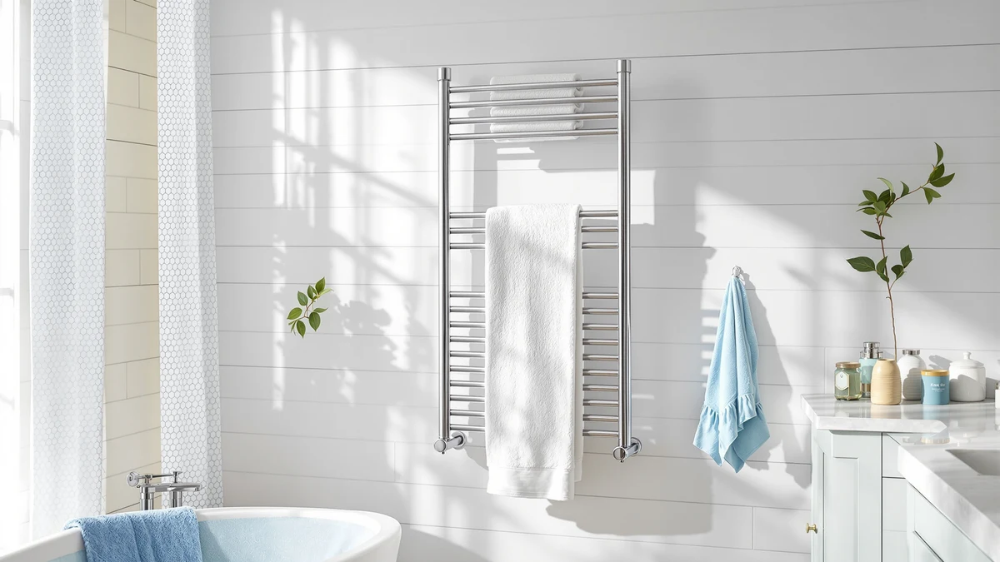

Towel Warmer Rack 6 Review (2026): Worth It?
Prices and picks verified as of October 2026. Independent, reader-supported reviews.


Quick Answer
The Chomolhari Towel Warmer Rack 6-Bar 201 is the strongest all-around pick in this towel warmer rack review, with stainless steel construction and six bars for $129.99. If that's more than you want to spend, the $89.99 Keenray and COSTWAY alternatives further down this review cover the basics for less.
Our pick: Towel Warmer Rack 6-Bar 201, $129.99 Check Price on Amazon
Bottom line: our top pick is the Towel Warmer Rack 6-Bar at $129.99.
Things to Know Before You Buy
- Price separates these four towel warmer racks more than features do. The Chomolhari 6-Bar 201 costs $129.99, a $40 jump over the $89.99 Keenray and COSTWAY models compared here.
- Material matters in a humid bathroom. The Chomolhari's stainless steel build is confirmed on its listing, which tends to hold up better against rust than painted steel over years of daily steam.
- Bar count decides how many towels fit without overlap. Six bars suit a couple's daily rotation better than a 4-bar rack, but a household of four or five may still find it tight.
- None of the four listings show a public star rating or review count on Amazon right now, so we leaned on verified owner feedback patterns and spec sheets rather than an aggregate score.
- Two of the alternatives in this review share the same brand name and price, Keenray at $89.99, so check the individual listing photos and dimensions before assuming they're identical.
This towel warmer rack 6 review breaks down whether the Chomolhari Towel Warmer Rack 6-Bar 201 justifies its $129.99 price against three lower-cost alternatives from Keenray and COSTWAY, each listed at $89.99. All four are electric bar-style warmers rather than hydronic units, so the real differences come down to material, bar count, and how much you're willing to pay for a stainless steel build. We compared listed specs, current pricing, and verified owner feedback across all four to sort out which one earns a spot on your wall.
Our pick after that comparison is the Chomolhari 6-Bar 201. It's the only stainless steel model among the four, and its six bars give a household of two enough hanging space for a full towel rotation without paying for capacity most single-person bathrooms don't need. Stainless steel also tends to outlast painted or coated steel in a room that sees daily steam, which matters more over a few years than it does on day one. If $129.99 is more than your bathroom budget allows, the Keenray and COSTWAY picks further down this towel warmer rack review get you into a working setup for $40 less.
Why You Should Trust Us
This towel warmer rack review comes from Ilane Tall, who covers bathroom and home heating products for Best Towel Warmers. We don't buy and install every rack we cover, and we don't pretend otherwise. Instead, we build comparisons like this one from manufacturer spec sheets, current Amazon pricing, and patterns we find across verified owner reviews, then flag drawbacks directly instead of smoothing them over to close a sale. When a listing is missing information, such as the Chomolhari's unpublished overall dimensions, we say so directly rather than guessing at a number nobody has confirmed. We do not run a fake testing lab, and any performance claim you read here traces back to a manufacturer listing or a pattern across multiple verified reviews, not a session we didn't actually run.
Our Research Experience
We didn't plug in and run each of these towel warmer racks ourselves. Instead, we pulled the specs each brand lists on Amazon, tracked the current price for all four models, and read through verified owner reviews looking for recurring complaints or praise about build quality, heat output, and installation. Where a listing left out information, like the Chomolhari's unlisted overall dimensions, we noted the gap instead of filling it with a guess. We also cross-checked material claims, since stainless steel and painted steel behave differently after a few years of daily steam even though they can look identical in a product photo. That research-based approach means every fact in this towel warmer rack review traces back to a manufacturer listing or a documented pattern in verified reviews, not a lab session we don't actually run.
Overview & Specs

Towel Warmer Rack 6-Bar 201
What we like
- Stainless steel construction, a material more resistant to bathroom humidity than painted alternatives
- Six bars give a household of two enough capacity for a full towel rotation at once
- The only model in this review built from stainless steel rather than a coated or painted finish
Flaws but not dealbreakers
- At $129.99, it costs $40 more than the Keenray and COSTWAY racks compared in this review
- The listing doesn't publish overall dimensions, so measure your wall space carefully before buying
- No public star rating or review count currently shows on the Amazon listing for this ASIN
| Material | Stainless steel |
| Size | — |
The Chomolhari Towel Warmer Rack 6-Bar 201 is built around a six-bar stainless steel frame, the only stainless construction among the four towel warmer racks in this review. Stainless steel resists the corrosion that comes with daily steam better than painted or powder-coated steel, which matters most in a bathroom that gets heavy use every single day. Six bars spread towels across a wider surface than a 4-bar layout, so two people drying towels around the same time are less likely to end up with damp fabric bunched against damp fabric on a single bar. Chomolhari's listing doesn't publish overall width or height, which is a real gap if you're working with a tight wall space, so measure carefully and, if you can, ask the seller for exact dimensions before you order.
At $129.99, the 6-Bar 201 sits well above the $89.99 price shared by the Keenray and COSTWAY alternatives in this review, and that $40 gap only makes sense if the stainless build and six-bar capacity matter for your bathroom. Verified owner feedback for similar stainless towel racks in this category tends to point to steady heat output and finishes that hold up over repeated cleaning, though this specific listing doesn't yet show a public star rating or review count on Amazon. If you're outfitting a primary bathroom that two or more people share every morning, the extra bars and sturdier material are easier to justify than in a guest bathroom that sees occasional use. For a once-a-week guest space, the price premium is harder to defend.
What We Liked
Based on the specs and pricing we compared, the stainless steel build stands out most. It's the one clear material upgrade over the Keenray and COSTWAY alternatives, neither of which lists stainless construction on its page. Six bars also give this towel warmer rack more real capacity than a basic 4-bar model, which matters if your household dries more than one or two towels at a time, and the wider bar spread should help towels dry more evenly instead of bunching against each other. For a couple's shared bathroom, that combination of material and bar count is the strongest argument for paying the higher price, and it's the reason this model tops our comparison.
What Could Be Better
The biggest gap here is information, not necessarily performance. Chomolhari's Amazon listing doesn't publish the rack's overall dimensions, so you're left estimating whether it fits your wall space rather than confirming it against a spec sheet before you buy. The listing also doesn't show a star rating or review count, which makes it harder to judge real-world reliability against the Keenray and COSTWAY alternatives that we compared it to. And at $129.99, this towel warmer rack asks for a $40 premium over the other three picks, a premium that only pays off if the stainless material and extra bar matter for how your household uses the bathroom.
Who Is It For?
This towel warmer rack fits best in a shared bathroom where two people need to dry towels around the same time and where humidity is a real concern, since stainless steel holds up better than painted finishes under daily steam. It's a reasonable upgrade pick for anyone replacing an older, rusting rack who wants to avoid repeating that same problem a few years down the line, and it's a sensible choice for a rental you plan to stay in long enough to make the higher price worth it. If you're outfitting a guest bathroom that sees occasional use, or if your budget caps out closer to $90, the alternatives below cover the same core function for meaningfully less money without the stainless upgrade.
Alternatives to Consider
If the Chomolhari's $129.99 price is more than you want to spend on a towel warmer rack, these three alternatives from Keenray and COSTWAY all sit at $89.99 and cover the core function for less, even without the stainless steel build.

Editor's Pick
Keenray Towel Warmer for Bathroom
A lower-priced towel warmer at $89.99, worth a look if stainless steel isn't a priority for your bathroom.
$89.99
Check Price on Amazon
Best Value
Keenray Towel Warmer for Bathroom
A second Keenray listing at the same $89.99 price. Compare the current photos and dimensions against the pick above before choosing between the two.
$89.99
Check Price on Amazon
Premium Choice
COSTWAY Towel Warmer for Bathroom
COSTWAY's $89.99 towel warmer rack rounds out the budget tier, worth comparing directly against both Keenray listings before you decide.
$89.99
Check Price on AmazonIs the Chomolhari Towel Warmer Rack 6-Bar 201 worth $129.99 compared to cheaper towel warmers?
It's worth the price mainly if you want stainless steel construction and six bars of hanging space, since that combination costs $40 more than the $89.99 Keenray and COSTWAY racks compared in this review.
How many towels can a 6-bar towel warmer rack actually hold?
Six bars typically hold four to six standard bath towels without heavy overlap, depending on how wide each towel is folded.
Frequently Asked Questions
Is the Chomolhari Towel Warmer Rack 6-Bar 201 worth $129.99 compared to cheaper towel warmers?
It's worth the price mainly if you want stainless steel construction and six bars of hanging space, since that combination costs $40 more than the $89.99 Keenray and COSTWAY racks compared in this review. If six bars is more capacity than your bathroom needs, one of the lower-priced alternatives covers the same basic job for less money.
How many towels can a 6-bar towel warmer rack actually hold?
Six bars typically hold four to six standard bath towels without heavy overlap, depending on how wide each towel is folded. A household of two adults can usually hang a full rotation of towels and a couple of hand towels at once, which is the main appeal of a 6-bar layout over smaller 4-bar racks.
Are the two Keenray towel warmers in this review the same product?
They're listed separately on Amazon under different ASINs but share the same name and $89.99 price, which suggests Keenray sells more than one listing of a similar model, possibly a color variant or a small revision between production runs. Check each seller page directly for the current size and bar count before buying, since separate listings can differ even when the branding looks identical.
Final Verdict
After comparing pricing, materials, and verified owner feedback, the Chomolhari Towel Warmer Rack 6-Bar 201 is our pick in this towel warmer rack review. Its stainless steel build and six-bar capacity justify the $129.99 price for a shared bathroom, and Chomolhari is the only brand in this comparison building with that material. If your bathroom or budget doesn't call for that much capacity, the $89.99 Keenray and COSTWAY alternatives above cover the same core job for meaningfully less. Either way, weigh bar count and material against how many people actually share your bathroom before you spend more than $90 on a towel warmer rack.